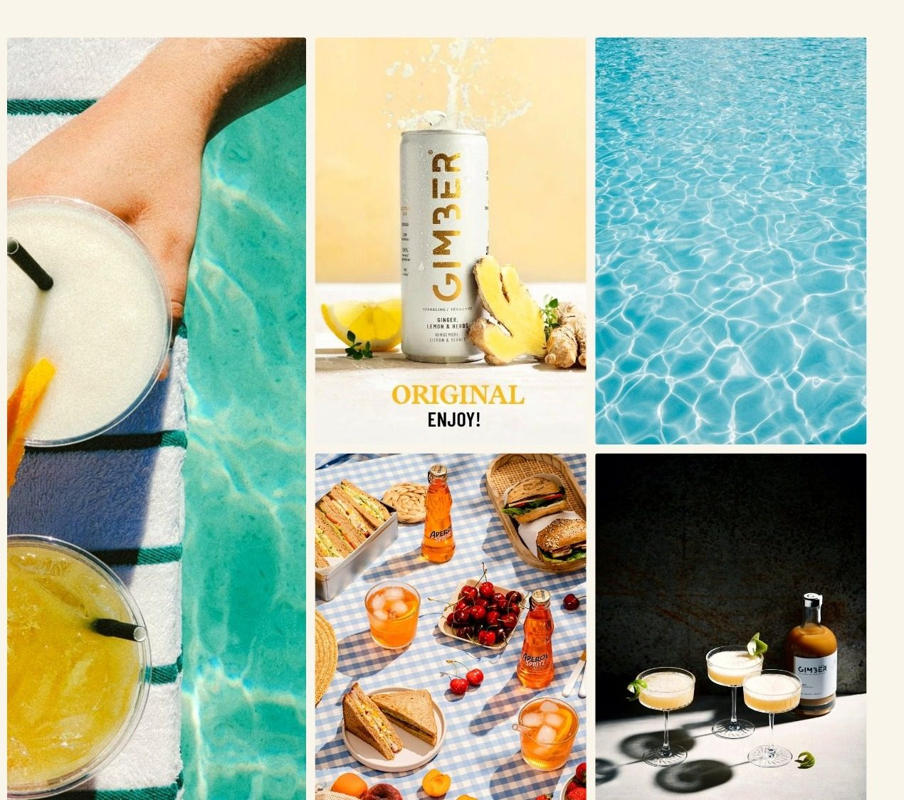
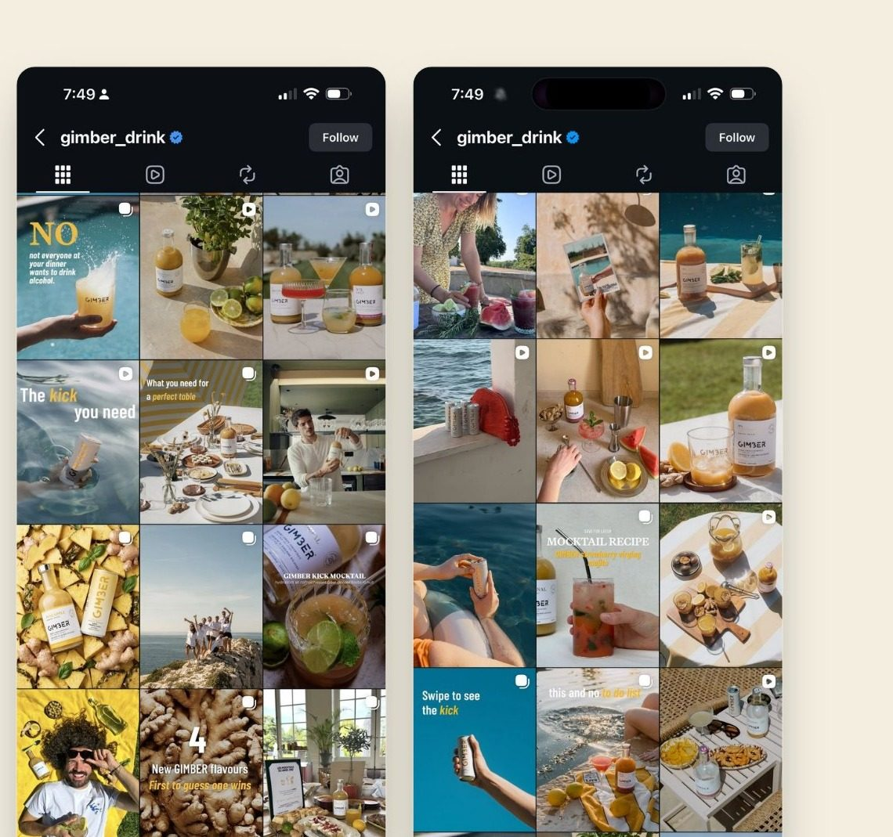
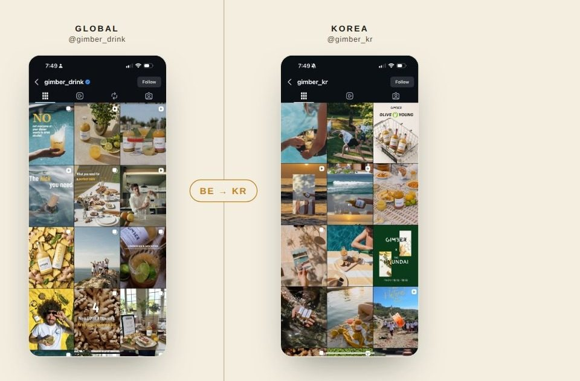
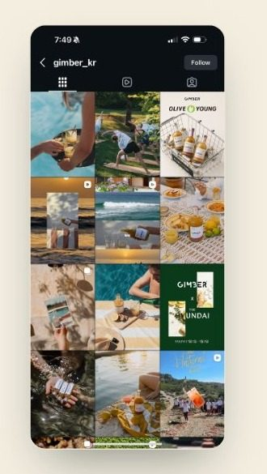

A narrative diagnosis — what happens when a brand nails the feeling and forgets the point.
Sun, water, linen, long European lunches. GIMBER's world is immaculate and instantly its own — you've probably saved a shot of it without ever clocking what's in the bottle.

There is a message — "healthy, but with a kick." At home, the culture already shares it, so the feed never has to say it out loud.

One account. Keep scrolling and every single post is immaculate — and every single post is selling something a little different.
healthy, but with a kick.
Never brought into focus
Not five brands — one blurry idea, read five ways. Each post commits to a sharper reading than the brand ever did.
Take the craft away, and the feed has nothing left to say.

Same brand, two hemispheres. The photography carries perfectly — both feeds are gorgeous. But a mood that was never said out loud has to survive on its own now.
The same soft message slid toward the nearest legible shelf — wellness, natural, organic. The fun didn't vanish; "your natural kick" is right there. It just got harder to understand.

healthy, but with a kick — brought into focus:
Everyone else promises — slim, pretty, well. GIMBER is the pleasure. The instinct's already there — limited drops like pineapple-basil, a cayenne "Intense" — it just isn't leading.
The scatter is on GIMBER's own public feed. The gap is real and visible to anyone who scrolls — no invention required, nothing cherry-picked.
Naming the fix — pleasure over promise, one sharp core that travels — is the strategic call. That's what a narrative brings, and it's the part a competitor can't just re-shoot.
GIMBER already built the hard part — a mood the world screenshots. A message is the part that compounds, crosses borders, and can't be re-shot. It just needs saying out loud.